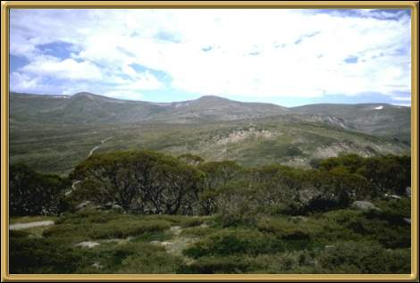
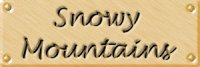

Photographer: Unknown
This is the view from the peak of the Snowy Mountains. This mountain range includes Mount Kosciusko, Australia's highest mountain. In winter there is superb skiing in these mountains, particularly (or so I've heard) at Thredbo and Perisher.